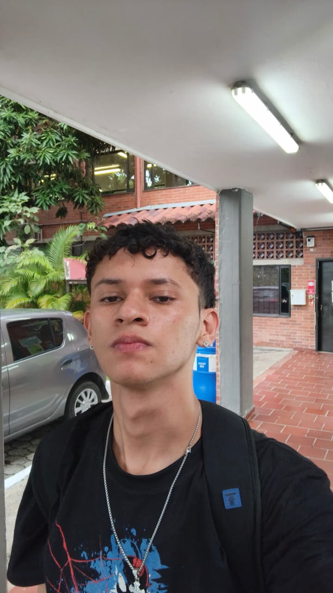

Pycods es un proyecto desarrollado por estudiantes de Ingeniería de Software con el objetivo de crear una herramienta educativa inclusiva, divertida e interactiva para enseñar programación a niños. Nos enfocamos especialmente en apoyar a niños con Trastorno del Espectro Autista (TEA), brindando una experiencia adaptada, visual y motivadora mediante el uso de juegos y tecnología.
Nuestro propósito es romper las barreras del aprendizaje tradicional y ofrecer un entorno donde cada niño pueda aprender a su propio ritmo, desarrollar habilidades cognitivas y descubrir el mundo de la programación de una forma sencilla y entretenida.

Desarrollador Frontend y Diseño
Desarrollador Backend y Lógica
Email: pycods@gmail.com
Teléfono: +57 300 123 4567
Universidad de Cundinamarca